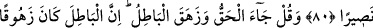
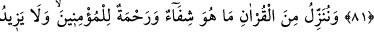

KUR’AN ŞİFÂ VE RAHMETTİR
78. Gündüzün güneş dönüp gecenin karanlığı bastırıncaya kadar (belli vakitlerde)
namaz kıl; bir de sabah namazını. Çünkü sabah namazı şâhidlidir.
79. Gecenin bir kısmında uyanarak, sana mahsus bir nâfile olmak üzere namaz
kıl. Umulur ki Rabbin seni övgüye değer bir makama ulaştırır.
80. Ve şöyle niyaz et: Rabbim! Gireceğim yere dürüstlükle girmemi sağla;
çıkacağım yerden de dürüstlükle çıkmamı sağla. Bana tarafından, hakkıyla yardım
edici bir kuvvet ver.
81. Yine de ki: Hak geldi; bâtıl yıkılıp gitti. Zâten bâtıl yıkılmaya mahkumdur.
82. Biz, Kur’an’dan öyle bir şey indiriyoruz ki o, müminler için şifâ ve rahmettir;
zalimlerin ise yalnızca ziyanını artırır.
“Gündüzün güneş dönüp” yâni zeval ya da gurup vaktinde demektir. al-Kâmûs’ta
belirtildiği üzere “__WORD__ dülûk” güneş battı, sarardı, göğün ortasından batıya doğru
meyletti demektir. “gecenin karanlığı bastırıncaya kadar” -ki bu yatsı namazının
vaktidir- belli vakitlerde “namaz kıl;” namaza devam et. Bu ifâdeden maksad her
namazı, devamlı olarak yukarıdaki iki vakit arasında değil ,o namaz için tayin edilen
vaktinde kılmaktır. “__WORD__ el-Gâsık” şafaktaki kızıllığın kaybolduğu vakit geceye
verilen isimdir.
“Bir de sabah namazını.” Âyette namazın ‘Kur’an’ diye isimlendirilmesi, kırâatin
namazın rüknü olması sebebiyledir. Namaz rükû ve sücûd olarak da isimlendirilmiştir.
“Dülûk” kelimesinin zevâl anlamında tefsirine göre âyet beş vakit namazı içine alır.
“Çünkü sabah namazı şâhidlidir.” Gece ve gündüz melekleri o namaza şâhid olur ve o
namazda hazır bulunur. Gece melekleri inerken gündüz melekleri göğe yükselir. Bu,
gece amellerinin yazıldığı defterin sonu gündüz amellerinin yazıldığı defterin
başlangıcında cereyan eder. Yâni gece melekleri onu müşâhede ederler ve gece